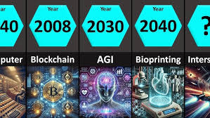

Technology has advanced rapidly over the centuries, transforming the way humans live, work, and communicate. From the invention of the wheel to the development of artificial intelligence, each milestone marks a significant step in our progress.
The evolution of technology continues to accelerate, leading to innovations like quantum computing, biotechnology, and space exploration. These advancements not only improve our daily lives but also pose new challenges and opportunities for society and the environment.
